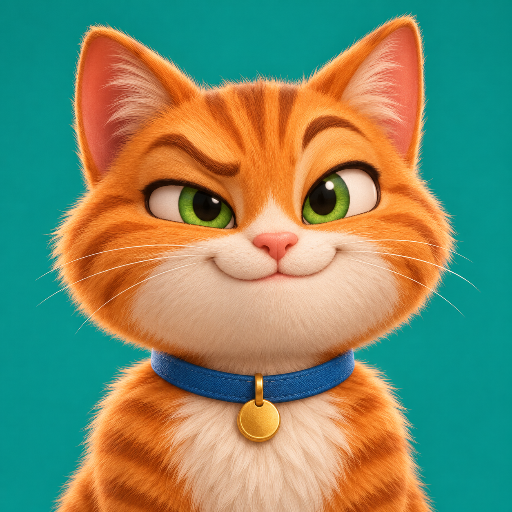

01 / CREATE
Find the little twist.
Choose a story, edit its hook, setup and payoff, and build your kit. English and Taglish modes adapt the surrounding copy; your own story text stays yours.
MAKE SOMETHING WORTH A PAUSE
Shape Mochi’s next little adventure. Leave with an animated short,
tailored captions and a publishing kit you actually own.

Meet your main character ↗01 / THE IDEA
Story templates and transparent writing rules. No live AI service or credits used.
02 / THE SHORT
Fixed illustrated scenes · edit the caption wording to match · silent
Checking browser video export…
Download rendered video ↓Previously generated in Google Flow using existing credits. This sample is provided; the app does not call Flow.
03 / THE VOICE
Five captions, timed SRT, story brief and your calendar in one ZIP.
Includes your rendered video when available.
Exports prepare your content. They do not upload, publish or schedule social posts.
FROM OUR FIRST REAL STORY
Mochi’s box adventure was shared through each platform’s own publishing tools.
A LITTLE STRUCTURE FOR YOUR CHAOS
Plan 3–5 stories a day. Times are editorial suggestions in Manila time,
ready for you to adjust before using each platform’s scheduling tools.
A content plan, not a publishing queue. No account connections or audience analytics are used.
YOUR NEXT THREE MINUTES
A complete preparation workflow. You choose when your story goes live.
01 / CREATE
Choose a story, edit its hook, setup and payoff, and build your kit. English and Taglish modes adapt the surrounding copy; your own story text stays yours.
02 / WATCH
Preview the full animation and read its narrative captions. Render the silent 15-second vertical video in this browser. The export format is shown before you start.
03 / TAKE IT WITH YOU
Export a ZIP with five captions, an SRT, your story and calendar. A newly rendered video is included. Source AI sample videos remain separate.
04 / PUBLISH
Upload through Facebook, Instagram, YouTube, X or TikTok. Check format support, AI disclosure, visibility and platform rules, then publish or schedule there. WebM exports may need conversion for your chosen destination.
Creates template-based story animations and platform copy locally, previews a provided AI-generated sample, prepares caption files and a seven-day editorial plan, and exports portable kits.
Live AI video generation, automatic social publishing, audience-based timing and unattended account management. There are no hidden connections or charges in this edition.
Local saving excludes rendered videos. Download your video or ZIP before closing this tab. Restoring replaces this browser’s current draft after validation.